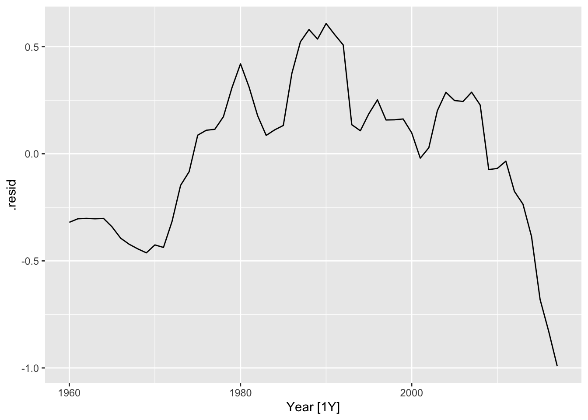

Chapter 22 Evaluating model residuals
22.1 Model residuals vs. forecast errors
Model residuals:
Your data: \(y_1, y_2, \ldots, y_T\)
Fitted values: \(\hat{y}_1, \hat{y}_2, \ldots, \hat{y}_T\)
Model residuals: \(e_t = y_t - \hat{y}_t\)
Forecast errors:
augment(fit)## # A tsibble: 15,150 x 7 [1Y]
## # Key: Country, .model [263]
## Country .model Year GDP .fitted .resid .innov
## <fct> <chr> <dbl> <dbl> <dbl> <dbl> <dbl>
## 1 Afghanistan trend_model 1960 537777811. -1587934559. 2125712370. 2.13e9
## 2 Afghanistan trend_model 1961 548888896. -1281158073. 1830046968. 1.83e9
## 3 Afghanistan trend_model 1962 546666678. -974381586. 1521048264. 1.52e9
## 4 Afghanistan trend_model 1963 751111191. -667605100. 1418716291. 1.42e9
## 5 Afghanistan trend_model 1964 800000044. -360828613. 1160828658. 1.16e9
## 6 Afghanistan trend_model 1965 1006666638. -54052127. 1060718765. 1.06e9
## 7 Afghanistan trend_model 1966 1399999967. 252724359. 1147275607. 1.15e9
## 8 Afghanistan trend_model 1967 1673333418. 559500846. 1113832572. 1.11e9
## 9 Afghanistan trend_model 1968 1373333367. 866277332. 507056034. 5.07e8
## 10 Afghanistan trend_model 1969 1408888922. 1173053819. 235835103. 2.36e8
## # … with 15,140 more rowsaugment(fit) %>% filter(Country == "Sweden") %>%
ggplot(aes(x = .resid)) +
geom_histogram(bins = 20) +
ggtitle("Histogram of residuals")22.2 Are the model residuals auto-correlated?
augment(fit) %>% filter(Country == "Sweden") -> augSweden
augSweden %>%
ACF(.resid) %>%
autoplot() + ggtitle("ACF of residuals")
augment(fit3) %>% filter(Country == "Sweden") -> augSweden3
augSweden3 %>%
ACF(.resid) %>%
autoplot() + ggtitle("ACF of residuals")
22.3 Example: GDP, several models, several countries
library(tsibbledata) # Data sets package
nordic <- c("Sweden", "Denmark", "Norway", "Finland")
(global_economy %>% filter(Country %in% nordic) -> nordic_economy)## # A tsibble: 232 x 9 [1Y]
## # Key: Country [4]
## Country Code Year GDP Growth CPI Imports Exports Population
## <fct> <fct> <dbl> <dbl> <dbl> <dbl> <dbl> <dbl> <dbl>
## 1 Denmark DNK 1960 6248946880. NA 8.25 34.3 32.3 4579603
## 2 Denmark DNK 1961 6933842099. 6.38 8.53 32.3 30.0 4611687
## 3 Denmark DNK 1962 7812968114. 5.67 9.16 32.5 28.6 4647727
## 4 Denmark DNK 1963 8316692386. 0.637 9.72 30.8 30.4 4684483
## 5 Denmark DNK 1964 9506678763. 9.27 10.0 32.6 29.9 4722072
## 6 Denmark DNK 1965 10678897387. 4.56 10.6 31.5 29.3 4759012
## 7 Denmark DNK 1966 11721248101. 2.74 11.3 30.8 28.6 4797381
## 8 Denmark DNK 1967 12788479692. 3.42 12.2 30.0 27.3 4835354
## 9 Denmark DNK 1968 13196541952 3.97 13.2 29.7 27.7 4864883
## 10 Denmark DNK 1969 15009384585. 6.32 13.7 30.4 27.6 4891860
## # … with 222 more rowsnordic_economy %>% autoplot(GDP)fitnord <- nordic_economy %>%
model(
trend_model = TSLM(GDP ~ trend()),
trend_model_ln = TSLM(log(GDP) ~ trend()),
ets = ETS(GDP ~ trend("A")),
arima = ARIMA(GDP)
)
fitnord## # A mable: 4 x 5
## # Key: Country [4]
## Country trend_model trend_model_ln ets arima
## <fct> <model> <model> <model> <model>
## 1 Denmark <TSLM> <TSLM> <ETS(M,A,N)> <ARIMA(1,1,1)>
## 2 Finland <TSLM> <TSLM> <ETS(M,A,N)> <ARIMA(0,1,2)>
## 3 Norway <TSLM> <TSLM> <ETS(M,A,N)> <ARIMA(0,1,1)>
## 4 Sweden <TSLM> <TSLM> <ETS(M,A,N)> <ARIMA(0,1,2)>Denmark: ARMA(1,1)
Finland: MA(2)
Norway: MA(1)
Sweden: MA(2)
fitnord %>% coef() ## # A tibble: 39 × 7
## Country .model term estimate std.error statistic p.value
## <fct> <chr> <chr> <dbl> <dbl> <dbl> <dbl>
## 1 Denmark trend_model (Intercept) -5.65e+10 8.75e+9 -6.46 2.70e- 8
## 2 Denmark trend_model trend() 6.63e+ 9 2.58e+8 25.7 1.14e-32
## 3 Denmark trend_model_ln (Intercept) 2.30e+ 1 8.55e-2 269. 7.68e-89
## 4 Denmark trend_model_ln trend() 7.12e- 2 2.52e-3 28.3 7.68e-35
## 5 Denmark ets alpha 1.00e+ 0 NA NA NA
## 6 Denmark ets beta 3.67e- 1 NA NA NA
## 7 Denmark ets l[0] 4.92e+ 9 NA NA NA
## 8 Denmark ets b[0] 1.24e+ 9 NA NA NA
## 9 Denmark arima ar1 -3.90e- 1 2.06e-1 -1.89 6.36e- 2
## 10 Denmark arima ma1 7.24e- 1 1.43e-1 5.05 4.84e- 6
## # … with 29 more rowsfitnord %>% glance() ## # A tibble: 16 × 21
## Country .model r_squared adj_r_squared sigma2 statistic p_value df
## <fct> <chr> <dbl> <dbl> <dbl> <dbl> <dbl> <int>
## 1 Denmark trend_mod… 0.922 0.920 1.08e+21 660. 1.14e-32 2
## 2 Denmark trend_mod… 0.935 0.933 1.03e- 1 800. 7.68e-35 2
## 3 Denmark ets NA NA 1.04e- 2 NA NA NA
## 4 Denmark arima NA NA 2.41e+20 NA NA NA
## 5 Finland trend_mod… 0.914 0.912 7.34e+20 594. 1.70e-31 2
## 6 Finland trend_mod… 0.930 0.929 1.14e- 1 745. 4.96e-34 2
## 7 Finland ets NA NA 1.32e- 2 NA NA NA
## 8 Finland arima NA NA 1.89e+20 NA NA NA
## 9 Norway trend_mod… 0.824 0.821 4.60e+21 262. 8.54e-23 2
## 10 Norway trend_mod… 0.959 0.958 8.37e- 2 1307. 1.64e-40 2
## 11 Norway ets NA NA 8.23e- 3 NA NA NA
## 12 Norway arima NA NA 6.78e+20 NA NA NA
## 13 Sweden trend_mod… 0.919 0.918 2.65e+21 635. 3.07e-32 2
## 14 Sweden trend_mod… 0.935 0.933 8.19e- 2 800. 7.57e-35 2
## 15 Sweden ets NA NA 1.16e- 2 NA NA NA
## 16 Sweden arima NA NA 8.84e+20 NA NA NA
## # … with 13 more variables: log_lik <dbl>, AIC <dbl>, AICc <dbl>, BIC <dbl>,
## # CV <dbl>, deviance <dbl>, df.residual <int>, rank <int>, MSE <dbl>,
## # AMSE <dbl>, MAE <dbl>, ar_roots <list>, ma_roots <list>fitnord %>%
accuracy() %>%
arrange(Country, MPE)## # A tibble: 16 × 11
## Country .model .type ME RMSE MAE MPE MAPE MASE RMSSE
## <fct> <chr> <chr> <dbl> <dbl> <dbl> <dbl> <dbl> <dbl> <dbl>
## 1 Denmark trend_m… Train… -1.12e+10 6.89e10 3.67e10 -5.17 28.0 3.34 4.24
## 2 Denmark ets Train… 4.50e+ 7 1.65e10 1.04e10 0.518 7.09 0.946 1.02
## 3 Denmark arima Train… 4.40e+ 9 1.51e10 1.04e10 5.05 8.16 0.945 0.930
## 4 Denmark trend_m… Train… -2.20e- 6 3.23e10 2.63e10 51.1 80.8 2.40 1.99
## 5 Finland trend_m… Train… -8.61e+ 9 5.64e10 2.99e10 -5.53 28.6 2.95 3.82
## 6 Finland ets Train… 1.36e+ 8 1.47e10 9.41e 9 0.795 8.36 0.927 0.996
## 7 Finland arima Train… 3.54e+ 9 1.34e10 9.14e 9 5.03 8.92 0.900 0.906
## 8 Finland trend_m… Train… 2.33e- 6 2.66e10 2.21e10 46.1 80.5 2.18 1.80
## 9 Norway trend_m… Train… -1.31e+10 8.20e10 3.51e10 -4.24 24.9 2.24 3.01
## 10 Norway ets Train… -5.29e+ 8 2.75e10 1.37e10 0.755 6.94 0.870 1.01
## 11 Norway arima Train… 4.90e+ 9 2.56e10 1.40e10 5.04 8.11 0.890 0.938
## 12 Norway trend_m… Train… -1.10e- 5 6.67e10 5.48e10 130. 181. 3.49 2.45
## 13 Sweden trend_m… Train… -1.18e+10 8.23e10 4.79e10 -3.96 23.7 2.25 2.68
## 14 Sweden ets Train… 1.19e+ 9 3.02e10 1.86e10 0.745 7.64 0.875 0.984
## 15 Sweden arima Train… 8.48e+ 9 2.89e10 2.01e10 5.18 9.37 0.942 0.944
## 16 Sweden trend_m… Train… 3.22e- 6 5.05e10 3.90e10 29.4 53.3 1.83 1.65
## # … with 1 more variable: ACF1 <dbl>